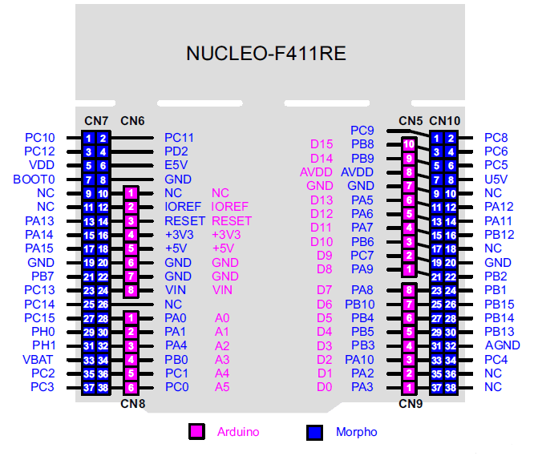
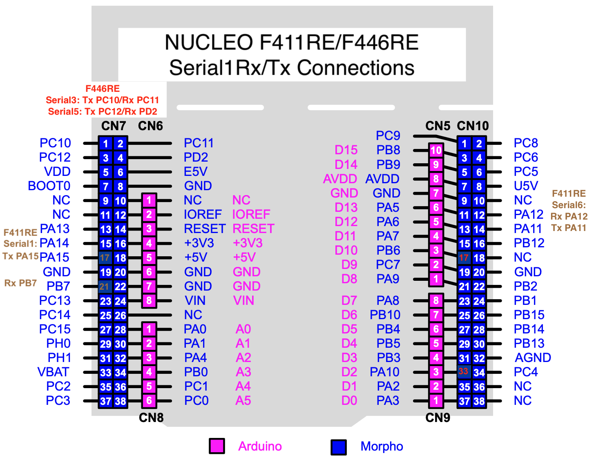

Beta microcontrollers - STM32 Nucleo, ESP32, and SAMD


New in version 5
Newer, faster, better
As technology progresses, newer, faster, and better microcontrollers become available, and therefore the dev team works in the background on porting and testing of DCC-EX on newer generations of microcontrollers to see if they might better suit the DCC-EX project.
This is never done lightly, as the effort to support a new microcontroller might be high and the benefits may be too inconsequential, or indeed may mean loss of functionality.
Considerations for new microcontrollers
When considering new microcontrollers to test and experiment with as potential candidates for EX‑CommandStation, these are the sorts of concerns taken into account (there are more considerations than this of course, these are just the highlights):
Architecture/code portability - how much work is required to adapt the codebase to support the architecture?
Form factor - can existing users use their existing motor shields and accessories with them?
Availability - with continuing microchip shortages impacting supply, is it still generally and easily available in quantity, and globally as we have users all over the world?
Sustainability - is the manufacturer deprecating the series or likely to?
Price - is it available at a price point that would encourage users to adopt it readily?
Quality - is it available with a sufficient build quality to make it reliable?
Notes on 3v3 vs. 5V microcontrollers
It’s important to note that the newer generations of microcontrollers almost always operate at 3.3 volts rather than 5 volts.
For some, like the STM32F4xx range, this is a non-issue as their digital I/O pins are designed to be 5V tolerant, meaning your existing sensors, serial devices, and I2C devices running at 5V are expected to be compatible. Outputs may need further consideration though, as while a “high” signal at 3v3 will trigger most 5V input logic devices, in some rare instances it can potentially not provide a high enough voltage. Using level shifters for digital outputs will resolve these issues, and if you want an extra layer of caution, you can use level shifters for the digital inputs as well.
For others that are not 5V tolerant, using 5V accessories will cause damage to the microcontroller, so using digital I/O level shifters is mandatory with these.
ALL 3v3 microcontrollers require analog inputs to be restricted to no more than 3.3V. This means only some Motor Driver boards are compatible unmodified with 3v3 microcontrollers to read output current. For the moment we recommend the genuine Ardiuno Motor Driver R3, and only the R3 version of it. Motor Drivers such as the Deek Robot can be modified readily enough. We will document this, but in the meantime ask on the Discord server.
Note
Some devices such as the ESP01 WiFi board and HC05/06 Bluetooth boards are already 3v3 devices, so if you have set these up with level shifters, the level shifters will no longer be required when using 3v3 microcontrollers.
STMicroelectronics STM32 NUCLEO series
STMicroelectronics has a range of ARM based microcontrollers that are generally available, sold from reputable global resellers such as Digi-Key and Mouser, and have exceptional build quality for their price (often lower than clone Arduino Mega models, and presently lower than all genuine Arduino Mega prices.)
Further to this, the NUCLEO series of development boards also provide Arduino Uno compatible header sockets, meaning existing motor (and other) shields can just plug straight in, providing they are 3v3 compatible (see note above).
All of the NUCLEO series being considered as a future DCC-EX platform have a great deal more RAM (128KB to 256KB vs 8KB for a Mega), double or more FLASH (512KB to 2MB) for program storage, and much faster CPU speed (100 to 180Mhz vs 16Mhz) than the current AVR-based UNO and Mega.
With those attributes comes the potential to support much larger EX-RAIL scripts, more WiThrottle connections, and many new features.
NUCLEO-F411RE and NUCLEO-F446RE
The majority of the current development work with the Nucleo series has been focused on the NUCLEO-F411RE as it most closely resembles the ubiquitous Arduino Uno form factor, including having Uno compatible header sockets in addition to Morpho pins for a much larger I/O capability than an Uno.
The F411RE has 50 I/O pins compared with the Uno’s 20, and only 20 less than the Arduino Mega despite its diminutive size. For most use cases it is therefore a suitable substitute for a Mega.
There are larger NUCLEO footprints available (see below), which have many more pins than an Arduino Mega.
A good summary if the F411RE is available on the arm MBED Nucleo-F411RE page.
The NUCLEO-F446RE is the same Nucleo-64 size as the F411RE, but with a faster processor and other features. As one of our more advanced early alpha test users has this board, it’s now also supported as a build target for DCC-EX and being actively tested.
A good summary if the F446RE is available on the arm MBED Nucleo-F446RE page.
Both the F411RE and F446RE are supported in the Arduino IDE.
NUCLEO-F412ZG, NUCLEO-F446ZE and NUCLEO-F429ZI
These are three of the larger NUCLEO devices being tested in the Nucleo-144 form factor; the NUCLEO-F412ZG, NUCLEO-F446ZE and NUCLEO-F429ZI.
Each of these has a larger footprint than the Nucleo-64 series, while still retaining the Uno compatible header sockets, with 114 I/O pins. That said, they are only slightly larger (20mm wider, 33mm longer) than an Arduino Mega 2560.
The F412ZG is potentially suitable as a larger replacement for a Mega, with more I/O pins available, refer to the arm MBED F412ZG page.
The F446ZE has the same large footprint, however it has a significantly faster CPU and a USB OTG port. Refer to the arm MBED F446ZE page.
The F429ZI has the same large footprint, however it has the added benefit of onboard Ethernet, which makes it potentially suitable for larger or exhibition layouts where the WiFi limitations of the ESP01 firmware come in to play. Note, however, that the Ethernet support for this board in EX‑CommandStation is currently not implemented. It too has a USB OTG port. Refer to the arm MBED F429ZI page.
Note
While the F429ZI is supported by the Arduino IDE, the F412ZG and F446ZE cannot be selected as build targets from within the Arduino IDE at present, and you will need to request the variant files and get some support from the DCC-EX dev team via Discord. The plan is to submit the F412ZG and F446ZE variant files to the STM32duino GitHub repo for inclusion once they are validated and debugged.
Install the STLink drivers for Windows
When using any of the NUCLEO series microcontrollers with Microsoft Windows, you will need to install their STLink USB drivers in order to be able to upload software to them and use the serial monitor in either PlatformIO or the Arduino IDE.
Note
You should install these drivers before plugging your NUCLEO device in for the first time.
As per STMicroelectronics’ software licensing policy, we have been able to host a local copy of these drivers and firmware upgrade software which also includes the license agreement that you are agreeing to when you download the software.
You can obtain the zip file containing these from our website here:
Nucleo USB drivers and diagnostic firmware
Once you download and extract this zip file, you will need to install the STLink drivers located in the “en.stsw-linik009” folder.

Right click the “stlink_winusb_install.bat” file and select “Run as administrator”. You will need to click “Yes” to allow it to make changes to your computer.

Click “Next” to install the drivers, and you should see this summary screen to confirm the drivers installed successfully:

You can now plug your NUCLEO device in and proceed with upgrading the debugger firmware (highly recommended).
Upgrade the debugger firmware
During testing, it was noted with certain USB chipsets on Windows 11 that serial responses via the USB debugger port would stop being received by the serial monitor, even though the device continued to operate normally. The recommendation to resolve this issue is to upgrade the debugger firmware.
We recommend you upgrade the debugger firmware regardless if you experience this issue or not.
You need to ensure your NUCLEO device is plugged in to a USB port prior to commencing the upgrade.
In the same zip file as the drivers, you will need to navigate through the “en.stsw-link007_v3-10-3” folder down to the “Windows” folder, which contains an executable “ST-LinkUpgrade.exe” to upgrade the firmware on the NUCLEO devices.

Double click this file to run it, which should present the upgrade window.

Clicking the “Device Connect” button will attempt to connect to your NUCLEO device and display the currently installed firmware version, along with the version it will attempt to upgrade to.
{kind=link}
Providing your NUCLEO device has been detected and is running an older version of the firmware, click “Yes >>>>” to proceed with the upgrade.

Hopefully you will see the “Upgrade is successful” pop up appear when complete.
{kind=link}
At this point, after clicking “OK” the software should display the new version of the firmware that has been applied to your device.
{kind=link}
Adding NUCLEO support to the Arduino IDE
In order to compile for the STM32 NUCLEO platforms, you will need to add the boards to the Arduino IDE.
To do this, navigate to “File” -> “Preferences” and add this URL to the “Additional Boards Manager URLs” list:
https://github.com/stm32duino/BoardManagerFiles/raw/main/package_stmicroelectronics_index.json
{kind=link}
You will then need to navigate to “Tools” -> “Board” -> “Boards Manager”, search for “stm32”, and install the support for these boards.
{kind=link}
Once this has been performed, the NUCLEO devices should be available to be selected in the Arduino IDE.
Adding NUCLEO support to VS Code/PlatformIO
In order to compile for the STM32 NUCLEO platforms you need do nothing when using Microsoft VS Code and PlatformIO. PlatformIO will automatically download the required tool chains and frameworks for platform support based on the entries in platformio.ini included in the EX‑CommandStation source tree.
Just select “Nucleo-F411RE” or “Nucleo-F446RE” as the build target, and hit build. Be sure to do this after installing the drivers (for Windows) and upgrading the debugger firmware per the instructions above.
Hardware setup notes for a NUCLEO EX‑CommandStation
Here is how the NUCLEO-F411RE looks when new, with a top view, and the pinouts. The NUCLEO-F446RE board looks near identical, pinouts are exactly the same, however some of their I/O functions map slightly differently as the F411RE and F446RE microcontrollers are different internally.
{kind=link}
{kind=link}
You will notice that the Ardiuno connectors are slightly inboard of the dual-row headers called the Morpho connectors.
Notes on the Arduino connectors on the NUCLEO range
Whilst the I/O pins are 5v-tolerant for digital IO, for the moment we recommend using 3v3 friendly Arduino R3 spec shields where you can.
The analog pins are NOT 5v-tolerant and accept a maximum of 3v3. We recommend using the new EX-MotorShield8874, or a genuine Ardiuno Motor Shield R3 revision (and only the R3!) for the moment. Instructions for modifying the earlier R2 version and the Deek Robot Motor Shield will follow in due course.
By default the Rx/Tx Arduino pins (D0/D1) are NOT connected to any of the NUCLEO’s pins. There are jumpers underneath to connect them to Serial2, but this isn’t recommended (see steps for serial connections below)
The Morpho pins extend both above AND below the Nucleo-64 series boards! Please be very wary of shorting any of these pins, especially those that protrude below. We recommend mounting 10mm M3 screw hex standoffs into the 3 mounting holes on the main PCB for your safety. See pic here:
{kind=link}
Here is the NUCLEO-F411RE with on the left a genuine Arduino Motor Shield R3 installed, and on the right a DCC-EX EX-MotorShield8874 installed:
{kind=link}

Notes on using the EX-MotorShield8874 with Nucleo
In order to take advantage of the EX-MotorShield8874’s single power source capability, you will need to move the Nucleo jumper JP5 from the U5V position (pins 1+2 jumpered, USB 5V source being used) to the E5V position (pins 2+3 jumpered).
This will power your Nucleo-64 unit using the EX-MotorShield8874’s onboard switch mode power supply of 7.2V to the VIN pin, and allows some 800mA of 5V power to be available for the Nucleo and peripherals.
NB: once you do this it will mean you need both the EX-MotorShield8874 barrel jack to be powered AND the USB cable to enable programming. Or you can temporarily move JP5 back to U5V whilst uploading EX‑CommandStation.
Serial for WiFi, for F411RE and F446RE
To connect an ESP8266 via either a WiFi shield or ESP01 module, you may use any of the available serial ports, which appear on different Morpho pins for the F411RE and F446RE.
The EX‑CommandStation source code currently maps the first additional serial port pins to:
F411RE: Rx/PA15 on CN7 pin 17, Tx/PB7 on CN7 pin 21 - known as Serial1
F446RE: Rx/PC11 on CN7 pin 2, Tx/PC10 on CN7 pin 1 - known as Serial3
Also defined in EX‑CommandStation is an additional serial port which appears on the following pins:
F411RE Rx CN10 PA12 pin 12, Tx CN10 PA11 pin 13 - known as Serial6
F446RE Rx CN7 PD2 pin 4, Tx CN7 PC12 pin 3 - known as Serial5
You will need to select a serial port to use, and connect the Rx pin on your NUCLEO to the Tx pin of your WiFi device, and the Tx pin of the NUCLEO to the Rx pin of the WiFi device. We recommend using Serial1 for the F411RE and Serial3 for F446RE. Below are pics of the positions of all available mapped serial ports:
{kind=link}
NB: The default serial port used for console communications for the F411RE and F446RE is Serial2, which is not connected to the Arduino Rx/Tx pins of D0/D1. Because the D0/D1 pads on the F411RE and F446RE are completely unconnected, you can happily jumper your chosen WiFi serial port pins above to D0/D1 with dupont connectors or permanently soldered wires.
Espressif ESP32 series
Espressif have for some years now made impressive WiFi and Bluetooth capable microcontroller modules. DCC-EX has made use of their original ESP8266 offering as the means to provide WiFi capability to the EX-CS.
Espressif’s newer ESP32 range has either WiFi alone or WiFi and Bluetooth capability built in. Espressif’s product naming is not the easiest to follow, but DCC-EX has been ported to the original ESP32-WROOM-32 module, which has the following capabilities:
Dual Xtensa 32-bit LX6 CPU cores
448KB of ROM for boot and core functions
520KB of RAM
WiFi: 802.11b/g/n up to 150Mbps
Bluetooth v4.2 BR/EDR and BLE
WiFi STA mode and AP mode
WiFi WPA/WPA2/WPA2-Enterprise/WPS support
Encryption AES/RSA/ECC/SHA
IPv4, IPv6, SSL, TCP/UDP/HTTP/FTP/MQTT
Hardware interfaces: SD-card, UART, SPI, SDIO, I2C, LED PWM, Motor PWM, I2S , IR, GPIO, capacitive touch sensor, ADC, DAC, Hall sensor, temperature sensor
The appeal of the ESP32 series is that they are very compact and come with WiFi capability built in. However, during porting to the ESP32-WROOM-32 we discovered they have some limitations, namely:
WiFi is implemented in a blob of code from Espressif, which takes over interrupts, making DCC signal generation difficult
To generate a clean DCC signal you need to program the special RMT hardware, normally used for IR remote controls
Once we had done this, the DCC signal was very good
The port is currently considered acceptable for beta testing, for tinkerers and engineers only.
Note
DCC-EX can only run on the ESP32-WROOM-32 module, and none of the other ESP32 modules (S2, S3, C3 etc.) are supported at present. This is because other ESP32 modules do not have the necessary RMT hardware, or do not have enough such hardware to run DCC-EX.
ESP32-WROOM-32 boards tested
The ESP32 development boards that have been tested include the WeMos D1 R32/ESPDUINO-32, the GRobotronics ESP32 DEVKIT V1, the OLIMEX ESP32 DEVKIT LIPO, and the LILYGO® TTGO T-Energy T18 V3.0 ESP32-WROVER-E development board. Note that although the last one is an ESP32-WROVER-E board, not the WROOM, it does appear to work for one user, but more testing is required.
{kind=link}
{kind=link}
{kind=link}
{kind=link}
WeMos D1 R32/ESPDUINO-32 board
The recommended hardware for now is the WeMos D1 R32, also referred to as the ESPDUINO-32. This consists of an ESP32-WROOM-32 module mounted on a UNO form factor board with UNO R3 style connectors. Pictured here:
Sharing the same form factor as the Arduino UNO it can make use of the Arduino Motor Shield R3 or the Deek-Robot Motor Shield. Note however that there are some hardware issues to be aware of, and to remedy before using this board.
It is a bit frustrating to find the following obvious hardware errors in popular boards like the ESPDUINO-32:
Pullup voltage to the IO0 pin is too high (4.2v instead of 3.3-3.8v) which leads to unreliable WiFi!
IOREF pin does not output 3v3, but instead breaches the UNO R3 specification and outputs 5V!
A0 and A1 analog input pins for current sensing should not be used, as they cannot be used on ESP32-WROOM modules when using WiFi!
All these issues can be fixed with a soldering iron and/or a jumper but that’s not what one expects from a released product.
Hardware setup notes for a WeMos D1 R32/ESPDUINO-32 EX‑CommandStation
To fix the IO0 pin voltage, install a resistor of between 250 to 300 Ohms between 3.3V and IO0 to pull it back down to 3.3V. This is easiest to do on the back side of the board, like so:
{kind=link}
From top to bottom the pins are: IO0, 5V (incorrectly labelled IOREF on this board, so not Arduino UNO R3 compliant), RESET, 3.3V, 5V, GND, GND, VIN as seen here:
{kind=link}
Using an Arduino Motor Shield R3 or clone
To avoid damaging the ESP32’s analog inputs, the IOREF pin on must be bent outwards or cut so it will not go into the ESPDUINO-32 socket. Then use a jumper from the 3.3v pin to IOREF on the motor shield itself.
For DCC current sensing bend or cut the A0 and A1 pins because by default they are connected to GPIO2 and GPIO4 on the ESP32 which are not useable at the same time as WiFi. Instead, on the top of the Motor Shield connect A0 to A2 and A1 to A3 via jumpers. This will then automatically work when you select STANDARD_MOTOR_SHIELD as the MotorShield in config.h because the definition is in place when ESP32 is selected as the build target.
{kind=link}
Using a DCC-EX EX-MotorShield8874
To avoid damaging the ESP32’s analog inputs, alter the IOREF jumper on the bottom of the EX-MotorShield8874 to take power from the 3v3 supply instead of IOREF as described in Power Configuration PCB Jumpers.
For DCC current sensing with the EX-MotorShield8874, use the alternate pin assignment jumpers for current sense to switch sensing to A2/A3 as described in Alternate Pin Assignment PCB Jumpers. Once this is done, simply select EX8874 in config.h as your MotorShield.
Finally, the ESP32 needs more testing and development of a DCC-EX I2C non-blocking native driver implementation in particular. I2C peripheral performance will be limited until such time.
WeMos D1 R32/ESPDUINO-32 with Microsoft Windows - CH340 drivers
When using the WeMos D1 R32/ESPDUINO-32 board with Microsoft Windows, you will need to install the CH340 USB drivers in order to be able to upload software to it and use the serial monitor in either PlatformIO or the Arduino IDE.
Adding ESP32 support to the Arduino IDE
In order to compile for the Espressif ESP32 platforms, you will need to add the board definitions to the Arduino IDE.
To do this, follow the instructions on the official Espressif guide.
When using VS Code and PlatformIO it will auto-configure from the entry in the platformio.ini file when you select the ESP32 target to be built.
Note
The ESP32 board package version 2.0.0 or greater is required.
Microchip SAMD21 series
Microchip’s SAMD21 series of ARM Cortex-M0+ enabled microcontrollers offer significantly more resources than the Mega. The Arduino Zero uses Microchip’s SAMD21G18A in an UNO R3 compatible form factor. A variety of manufacturers have produced clones of this design, usually omitting the Embedded Debugger (EBDG) of the original Arduino Zero design.
ATSAMD21G18 32-bit/48MHz ARM Cortex-M0+
256KB Flash Memory
32KB SRAM
30 GPIO
14-channel 12-bit resolution ADC
1 10-bit resolution DAC
6 serial ports, any combination of UART, I2C and SPI (separate from the USB serial)
3 16-bit timer/counters
32-bit Real-Time Clock and Calendar
20 PWM capable outputs
Full Speed USB device and embedded host capability
The appeal of the SAMD21 series is their relatively high performance, low cost and low power consumption.
Note
A strong limitation however is that their GPIO are 3v3 compatible only and not 5v-tolerant like the STM32F4xx range. Another is an apparent bug in the USB CDC serial driver library code for the console, and lack of intent by Arduino to issue the fix we suggest. For these reasons whilst support is included, we are not pursuing this line as a long term support goal for now.
SAMD21G18 boards tested
So far, the Arduino Zero, SparkFun SAMD21 Dev Breakout, Sparkfun RedBoard Turbo, and SAMD21 M0 Mini (originally RobotDyn, but clones exist too) have been tested. The Arduino Zero, and both Sparkfun boards are more conveniently in the UNO R3 form factor:
{kind=link}
{kind=link}
{kind=link}
{kind=link}
Note
Please note that the barrel jack on the Sparkfun SAMD21 Dev Breakout is not fitted by the factory and the board itself CANNOT handle more than 6VDC. We strongly suggest you triple-check voltages before using this connector. It may give less scope for error to stick to powering the board via the Micro-USB connector for power.
Note also that the DCC-EX EX-MotorShield8874’s onboard regulator is by default set too high for the SAMD21 Dev Breakout at 7.2VDC. Adjustments to resistor R206 will be needed to lower the output to a safe 6V instead.
Dropped character on USB CDC fix
The USB CDC driver code for Arduino SAMD core implementation seems broken as it is both slow and loses characters. This issue had already been reported to the Arduino SAMD GitHub pages as issue #538, and was then backed up with details from the DCC-EX dev team (https://github.com/arduino/ArduinoCore-samd/issues/538).
You will need to edit some code in the Arduino Core library for SAMD to fix this temporarily. Where the file to be fixed resides depends on the particular SAMD21 board you have, the OS and development environment you are using.
When running Arduino IDE: look for the file USBCore.cpp in one of these locations, in this case for the Arduino Zero:
Windows: C:\Users\____\AppData\Local\Arduino15\packages\arduino\hardware\samd\1.8.13\cores\arduino\USB\USBCore.cpp
MacOS: ~/Library/Arduino15/packages/arduino/hardware/samd/1.8.13/cores/arduino/USB/USBCore.cpp
Linux: ~/.arduino15/packages/arduino/hardware/samd/1.8.13/cores/arduino/USB/USBCore.cpp
When running VS Code/PlatformIO: look for the file USBCore.cpp in one of these locations:
Windows: C:\Users\____\.platformio\packages\framework-arduino-samd\cores\arduino\USB\USBCore.cpp
MacOS: ~/.platformio/packages/framework-arduino-samd/cores/arduino/USB/USBCore.cpp
Linux: ~/.platformio/packages/framework-arduino-samd/cores/arduino/USB/USBCore.cpp
Look for the code shaded in dark blue, and replace it per the suggestion in light blue at the top (code for which is shown below for easy copy/paste):
And replace it with:
while (usbd.epBank1IsReady(ep) && !usbd.epBank1IsTransferComplete(ep)) {
// optional timeout code here
};
For boards such as the Sparfun SAMD21 Dev Breakout or Redboard Turbo, you will need to look in the Sparkfun directories for the appropriate USBCore.cpp file to alter, for example:
For PlatformIO this is: .platformio/packages/framework-arduino-samd/cores/arduino/USB/USBCore.cpp
For Arduino IDE this is: Arduino15/packages/SparkFun/hardware/samd/1.8.3/cores/arduino/USBCore.cpp
Note
You will need to do this every time the SAMD Arduino core code is updated unless our fix has been incorporated. We will change our documentation to reflect is if/when it happens.